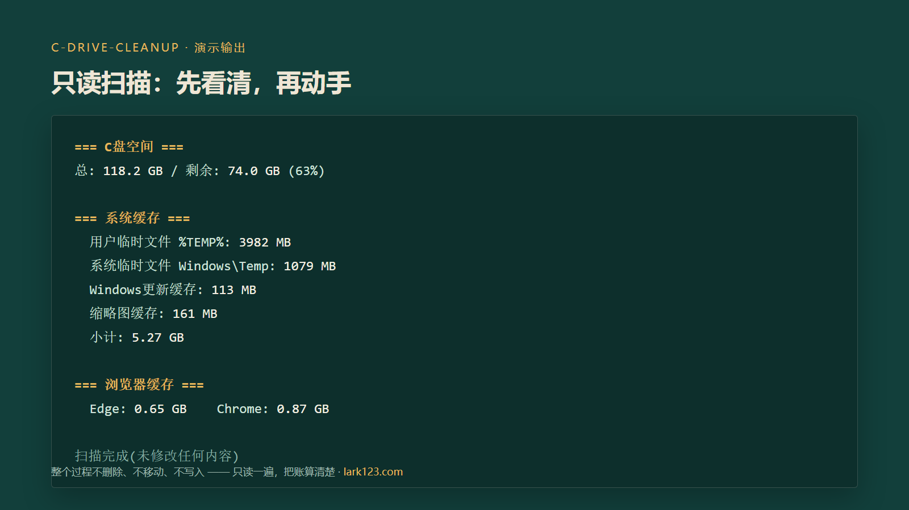
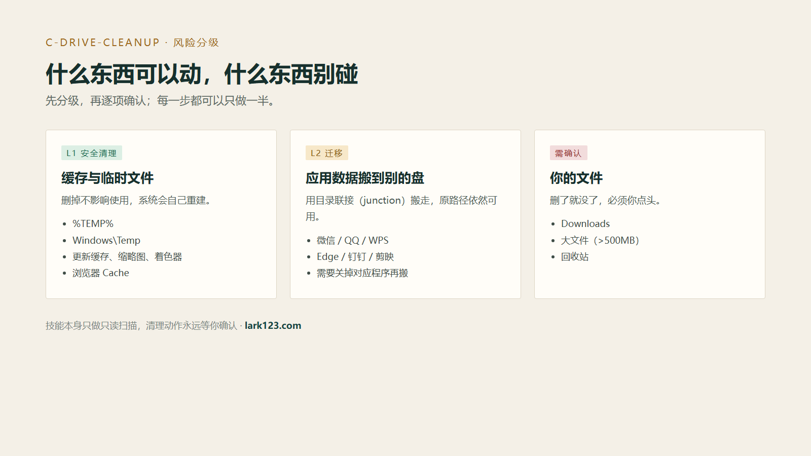

C-DRIVE-CLEANUP / LARK EDITION
把 C 盘
的账算清楚
先只读扫描，看清每一块空间花在哪；再按 L1 / L2 / 需确认 三级处理。技能只负责算账和搬运，删什么永远等你点头。
01只读扫描
02分级报告
03按级处理
04目录联接
先只读扫描，看清每一块空间花在哪；再按 L1 / L2 / 需确认 三级处理。技能只负责算账和搬运，删什么永远等你点头。
清 C 盘最容易犯的错，是一上来就删。这个技能反过来：先花两分钟把账算清楚，再按风险分级逐项动手。
一份分区报告 + 可回滚的迁移
扫描阶段不写入任何内容，结尾固定打印「未修改任何内容」。
| 这次测出来的问题 | 处理 |
|---|---|
| 扫描脚本 UTF-8 无 BOM，PowerShell 5.1 下乱码报错 | 加 BOM 后 5.1 / 7 均可运行 |
| 迁移脚本无 dry-run | 说明书标注为破坏性操作，先确认再跑 |
| 「大文件」只写在 SKILL.md，脚本未实现 | 说明书按实际能力写，由智能体另行查找 |
lark123.com02 / 08一条命令，九段报告：磁盘余量、系统缓存、浏览器缓存、应用缓存、用户目录、三处 Top 10、回收站。

lark123.com03 / 08把整个 c-drive-cleanup 文件夹放进技能目录即可，不要只复制 SKILL.md。
豆包是 .user_skills，其它智能体换成各自的 skills 目录。
Windows 自带的 PowerShell 5.1 或 PowerShell 7，不需要安装任何东西。
lark123.com04 / 08
报告里每一项都标了归属与体积：L1 的缓存删掉会自己重建；L2 的应用数据用目录联接搬走，原路径照样能打开；L3 只报告，不动手。
lark123.com05 / 08第一步 · 只读扫描
第二步 · 迁移某个应用（L2）
执行顺序：robocopy 复制 → 原目录改名 _backup → 建目录联接。原路径在新位置继续可用。
| 脚本 | 参数 | 说明 |
|---|---|---|
| c_scan.ps1 | 无 | 只读扫描，不写任何东西 |
| c_move_app.ps1 | -Source / -Target | 必填；源目录不存在直接报错退出 |
lark123.com06 / 08C 盘满了、系统更新装不下、软件数据全挤在 C 盘——先看清再动手，比盲目删目录安全得多。
lark123.com07 / 08| 目标 | 要改什么 | 难度 |
|---|---|---|
| Claude Code / Codex | 脚本路径换成绝对路径，其余照旧 | 低 |
| Cursor / 自研 Agent | 让工具层执行 PowerShell 命令并读输出 | 低 |
| Dify / Coze 等云端编排 | 不可用：必须在本地机器上跑 | — |
拿到的是无 BOM 的旧版本，用发布包里的版本（已修复）。
需要管理员权限，用管理员终端再跑一次。
删掉目录联接，把 _backup 目录改回原名回滚。
lark123.com08 / 08